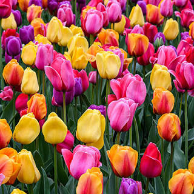
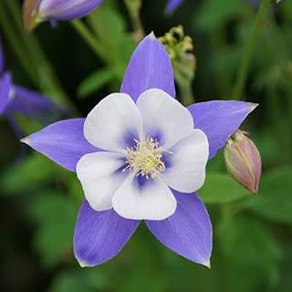
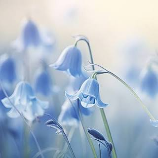
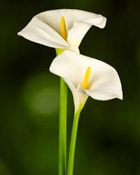

flores
Las flores son las estructuras reproductivas de muchas plantas. Su función principal es atraer a polinizadores como abejas, mariposas y aves, lo que permite que la planta produzca semillas y se reproduzca. Además de su papel biológico, las flores son valoradas por su belleza y variedad de colores, formas y aromas.
tipos de flores
Existen muchos tipos de flores, desde las pequeñas y sencillas como las margaritas, hasta las grandes y exóticas como las orquídeas. Algunas florecen todo el año, mientras que otras lo hacen solo en ciertas
variedad y colores
Existen miles de especies de flores en el mundo, cada una con formas, tamaños y colores diferentes. Algunas de las más conocidas son las rosas, los girasoles, los tulipanes, las margaritas y las orquídeas. Sus colores pueden atraer a insectos polinizadores como abejas, mariposas y colibríes, ayudando a la reproducción de las plantas.
uso de las flores
Además de su belleza, las flores tienen muchos usos. Se utilizan para fabricar perfumes, medicinas naturales, aceites esenciales y productos de belleza. También se cultivan para uso ornamental en jardines y espacios públicos, y son una parte esencial de la agricultura y la economía en muchos países.
